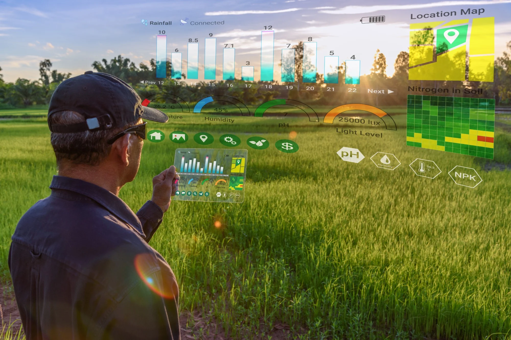

Bem-vindo ao AgroInteligente!
O AgroInteligente é uma plataforma que traz soluções digitais para o agronegócio, facilitando o dia a dia do produtor rural por meio do uso de sensores, automação e análise de dados. Aqui você encontra informação, tecnologia, consultoria e ferramentas práticas para aumentar a produtividade e a sustentabilidade da sua lavoura.

Simulador de Produtividade
Experimente nosso Simulador de Produtividade, uma ferramenta interativa que mostra, na prática, como fatores monitorados por sensores IoT afetam o resultado da lavoura.
- Insira dados reais ou simulados (umidade do solo, temperatura, nutrientes, pragas e luminosidade).
- Receba avaliações automáticas de cada fator, com dicas e comentários personalizados.
- Veja a nota geral da produtividade e recomendações práticas para melhorar o desempenho da sua produção.
- Ideal para produtores, estudantes e curiosos que querem entender a importância da Agricultura 4.0 de forma simples e visual.
Nossas Soluções
Sensores conectados para identificar problemas e tomar decisões rápidas.
Reduza custos e otimize recursos com irrigação, controle de pragas e manejo automatizado.
Conte com especialistas para personalizar soluções para a sua realidade.
Fale Conosco
Tem dúvidas, sugestões ou quer saber como aplicar a Agricultura 4.0 na sua propriedade? Entre em contato conosco! Nossa equipe está pronta para ajudar você a inovar no campo.
Entrar em Contato